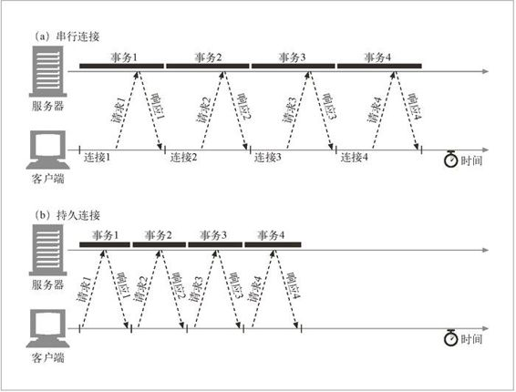
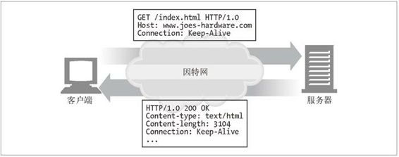
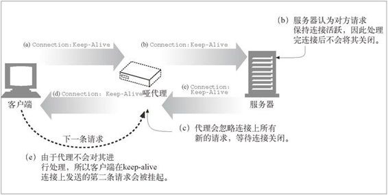
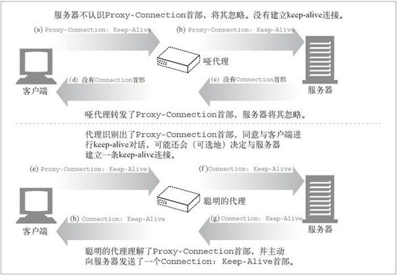
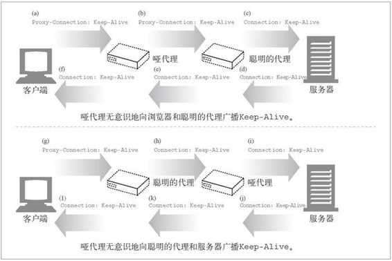

4.5 持久连接
Web 客户端经常会打开到同一个站点的连接。比如，一个 Web 页面上的大部分内嵌图片通常都来自同一个 Web 站点，而且相当一部分指向其他对象的超链通常都指向同一个站点。因此，初始化了对某服务器 HTTP 请求的应用程序很可能会在不久的将来对那台服务器发起更多的请求（比如，获取在线图片）。这种性质被称为站点局部性（site locality）。
因此，HTTP/1.1（以及 HTTP/1.0 的各种增强版本）允许 HTTP 设备在事务处理结束之后将 TCP 连接保持在打开状态，以便为未来的 HTTP 请求重用现存的连接。在事务处理结束之后仍然保持在打开状态的 TCP 连接被称为持久连接。非持久连接会在每个事务结束之后关闭。持久连接会在不同事务之间保持打开状态，直到客户端或服务器决定将其关闭为止。
重用已对目标服务器打开的空闲持久连接，就可以避开缓慢的连接建立阶段。而且，已经打开的连接还可以避免慢启动的拥塞适应阶段，以便更快速地进行数据的传输。
4.5.1 持久以及并行连接
我们看到，并行连接可以提高复合页面的传输速度。但并行连接也有一些缺点。
每个事务都会打开 / 关闭一条新的连接，会耗费时间和带宽。
由于 TCP 慢启动特性的存在，每条新连接的性能都会有所降低。
可打开的并行连接数量实际上是有限的。
持久连接有一些比并行连接更好的地方。持久连接降低了时延和连接建立的开销，将连接保持在已调谐状态，而且减少了打开连接的潜在数量。但是，管理持久连接时要特别小心，不然就会累积出大量的空闲连接，耗费本地以及远程客户端和服务器上的资源。
持久连接与并行连接配合使用可能是最高效的方式。现在，很多 Web 应用程序都会打开少量的并行连接，其中的每一个都是持久连接。持久连接有两种类型：比较老的 HTTP/1.0+“keep-alive”连接，以及现代的 HTTP/1.1“persistent”连接。在接下来的几节中我们将对这两种类型进行介绍。
4.5.2 HTTP/1.0+ keep-alive连接
大约从 1996 年开始，很多 HTTP/1.0 浏览器和服务器都进行了扩展，以支持一种被称为 keep-alive 连接的早期实验型持久连接。这些早期的持久连接受到了一些互操作性设计方面问题的困扰，这些问题在后期的 HTTP/1.1 版本中都得到了修正，但很多客户端和服务器仍然在使用这些早期的 keep-alive 连接。
图 4-13 显示了 keep-alive 连接的一些性能优点，图中将在串行连接上实现 4 个 HTTP 事务的时间线与在一条持久连接上实现同样事务所需的时间线进行了比较。 由于去除了进行连接和关闭连接的开销，所以时间线有所缩减。1
1 由于去除了慢启动阶段，请求和响应时间可能也有缩减。这种性能收益在图中没有显示出来。

图 4-13 4 个事务（串行与持久连接）
4.5.3 Keep-Alive 操作
keep-alive 已经不再使用了，而且在当前的 HTTP/1.1 规范中也没有对它的说明了。但浏览器和服务器对 keep-alive 握手的使用仍然相当广泛，因此，HTTP 的实现者应该做好与之进行交互操作的准备。现在我们来快速浏览一下 keep-alive 的操作。对 keep-alive 握手更详细的解释请参见较早的 HTTP/1.1 规范版本（比如 RFC 2068）。
实现 HTTP/1.0 keep-alive 连接的客户端可以通过包含 Connection: Keep-Alive 首部请求将一条连接保持在打开状态。
如果服务器愿意为下一条请求将连接保持在打开状态，就在响应中包含相同的首部（参见图 4-14）。如果响应中没有 Connection: Keep-Alive 首部，客户端就认为服务器不支持 keep-alive，会在发回响应报文之后关闭连接。

图 4-14 HTTP/1.0 keep-alive 事务首部的握手过程
4.5.4 Keep-Alive 选项
注意，keep-Alive 首部只是请求将连接保持在活跃状态。发出 keep-alive 请求之后，客户端和服务器并不一定会同意进行 keep-alive 会话。它们可以在任意时刻关闭空闲的 keep-alive 连接，并可随意限制 keep-alive 连接所处理事务的数量。
可以用 Keep-Alive 通用首部中指定的、由逗号分隔的选项来调节 keep-alive 的行为。
参数 timeout 是在 Keep-Alive 响应首部发送的。它估计了服务器希望将连接保持在活跃状态的时间。这并不是一个承诺值。
参数 max 是在 Keep-Alive 响应首部发送的。它估计了服务器还希望为多少个事务保持此连接的活跃状态。这并不是一个承诺值。
Keep-Alive 首部还可支持任意未经处理的属性，这些属性主要用于诊断和调试。语法为 name [=value]。
Keep-Alive 首部完全是可选的，但只有在提供 Connection: Keep-Alive 时才能使用它。这里有个 Keep-Alive 响应首部的例子，这个例子说明服务器最多还会为另外 5 个事务保持连接的打开状态，或者将打开状态保持到连接空闲了 2 分钟之后。
Connection: Keep-Alive
Keep-Alive: max=5, timeout=120
4.5.5 Keep-Alive 连接的限制和规则
使用 keep-alive 连接时有一些限制和一些需要澄清的地方。
在 HTTP/1.0 中，keep-alive 并不是默认使用的。客户端必须发送一个 Connection: Keep-Alive 请求首部来激活 keep-alive 连接。
Connection: Keep-Alive 首部必须随所有希望保持持久连接的报文一起发送。如果客户端没有发送 Connection: Keep-Alive 首部，服务器就会在那条请求之后关闭连接。
通过检测响应中是否包含Connection: Keep-Alive响应首部，客户端可以判断服务器是否会在发出响应之后关闭连接。
只有在无需检测到连接的关闭即可确定报文实体主体部分长度的情况下，才能将连接保持在打开状态——也就是说实体的主体部分必须有正确的 Content-Length，有多部件媒体类型，或者用分块传输编码的方式进行了编码。在一条 keep-alive 信道中回送错误的 Content-Length 是很糟糕的事，这样的话，事务处理的另一端就无法精确地检测出一条报文的结束和另一条报文的开始了。
代理和网关必须执行 Connection 首部的规则。代理或网关必须在将报文转发出去或将其高速缓存之前，删除在 Connection 首部中命名的所有首部字段以及 Connection 首部自身。
严格来说，不应该与无法确定是否支持 Connection 首部的代理服务器建立 keep-alive 连接，以防止出现下面要介绍的哑代理问题。在实际应用中不是总能做到这一点的。
从技术上来讲，应该忽略所有来自 HTTP/1.0 设备的 Connection 首部字段（包括 Connection: Keep-Alive），因为它们可能是由比较老的代理服务器误转发的。但实际上，尽管可能会有在老代理上挂起的危险，有些客户端和服务器还是会违反这条规则。
除非重复发送请求会产生其他一些副作用，否则如果在客户端收到完整的响应之前连接就关闭了，客户端就一定要做好重试请求的准备。
4.5.6 Keep-Alive 和哑代理
我们来仔细看看 keep-alive 和哑代理中一些比较微妙的问题。Web 客户端的 Connection: Keep-Alive 首部应该只会对这条离开客户端的 TCP 链路产生影响。这就是将其称作“连接”首部的原因。如果客户端正在与一台 Web 服务器对话，客户端可以发送一个 Connection: Keep-Alive 首部来告知服务器它希望保持连接的活跃状态。如果服务器支持 keep-alive，就回送一个 Connection: Keep-Alive 首部，否则就不回送。
Connection 首部和盲中继
问题出在代理上——尤其是那些不理解 Connection 首部，而且不知道在沿着转发链路将其发送出去之前，应该将该首部删除的代理。很多老的或简单的代理都是盲中继（blind relay），它们只是将字节从一个连接转发到另一个连接中去，不对 Connection 首部进行特殊的处理。
假设有一个 Web 客户端正通过一个作为盲中继使用的哑代理与 Web 服务器进行对话。图 4-15 显示的就是这种情形。

图 4-15 keep-alive 无法与不支持 Connection 首部的代理进行互操作
这幅图中发生的情况如下所示。
在图 4-15a 中，Web 客户端向代理发送了一条报文，其中包含了 Connection: Keep-Alive 首部，如果可能的话请求建立一条 keep-alive 连接。客户端等待响应，以确定对方是否认可它对 keep-alive 信道的请求。
哑代理收到了这条 HTTP 请求，但它并不理解 Connection 首部（只是将其作为一个扩展首部对待）。代理不知道 keep-alive 是什么意思，因此只是沿着转发链路将报文一字不漏地发送给服务器（图 4-15b）。但 Connection 首部是个逐跳首部，只适用于单条传输链路，不应该沿着传输链路向下传输。接下来，就要发生一些很糟糕的事情了。
在图 4-15b 中，经过中继的 HTTP 请求抵达了 Web 服务器。当 Web 服务器收到经过代理转发的 Connection: Keep-Alive 首部时，会误以为代理（对服务器来说，这个代理看起来就和所有其他客户端一样）希望进行 keep-alive 对话！对 Web 服务器来说这没什么问题——它同意进行 keep-alive 对话，并在图 4-15c 中回送了一个 Connection: Keep-Alive 响应首部。所以，此时 Web 服务器认为它在与代理进行 keep-alive 对话，会遵循 keep-alive 的规则。但代理却对 keep-alive 一无所知。不妙。
在图 4-15d 中，哑代理将 Web 服务器的响应报文回送给客户端，并将来自 Web 服务器的 Connection: Keep-Alive 首部一起传送过去。客户端看到这个首部，就会认为代理同意进行 keep-alive 对话。所以，此时客户端和服务器都认为它们在进行 keep-alive 对话，但与它们进行对话的代理却对 keep-alive 一无所知。
由于代理对 keep-alive 一无所知，所以会将收到的所有数据都回送给客户端，然后等待源端服务器关闭连接。但源端服务器会认为代理已经显式地请求它将连接保持在打开状态了，所以不会去关闭连接。这样，代理就会挂在那里等待连接的关闭。
客户端在图 4-15d 中收到了回送的响应报文时，会立即转向下一条请求，在 keep-alive 连接上向代理发送另一条请求（参见图 4-15e）。而代理并不认为同一条连接上会有其他请求到来，请求被忽略，浏览器就在这里转圈，不会有任何进展了。
这种错误的通信方式会使浏览器一直处于挂起状态，直到客户端或服务器将连接超时，并将其关闭为止。2
2 在很多类似的情形下，盲中继和转发的握手信息都会引发问题。
代理和逐跳首部
为避免此类代理通信问题的发生，现代的代理都绝不能转发 Connection 首部和所有名字出现在 Connection 值中的首部。因此，如果一个代理收到了一个 Connection: Keep-Alive 首部，是不应该转发 Connection 首部，或所有名为 Keep-Alive 的首部的。
另外，还有几个不能作为 Connection 首部值列出，也不能被代理转发或作为缓存响应使用的首部。其中包括 Proxy-Authenticate、Proxy-Connection、Transfer-Encoding 和 Upgrade。更多信息，请参考 4.3.1 节。
4.5.7 插入Proxy-Connection
Netscape 的浏览器及代理实现者们提出了一个对盲中继问题的变通做法，这种做法并不要求所有的 Web 应用程序支持高版本的 HTTP。这种变通做法引入了一个名为 Proxy-Connection 的新首部，解决了在客户端后面紧跟着一个盲中继所带来的问题——但并没有解决所有其他情况下存在的问题。在显式配置了代理的情况下，现代浏览器都实现了 Proxy-Connection，很多代理都能够理解它。
问题是哑代理盲目地转发 Connection: Keep-Alive 之类的逐跳首部惹出了麻烦。逐跳首部只与一条特定的连接有关，不能被转发。当下游服务器误将转发来的首部作为来自代理自身的请求解释，用它来控制自己的连接时，就会引发问题。
在网景的变通做法是，浏览器会向代理发送非标准的 Proxy-Connection 扩展首部，而不是官方支持的著名的 Connection 首部。如果代理是盲中继，它会将无意义的 Proxy-Connection 首部转发给 Web 服务器，服务器会忽略此首部，不会带来任何问题。但如果代理是个聪明的代理（能够理解持久连接的握手动作），就用一个 Connection 首部取代无意义的 Proxy-Connection 首部，然后将其发送给服务器，以收到预期的效果。
图 4-16a ～ 图 4-16d 显示了盲中继是如何向Wb服务器转发 Proxy-Connection 首部，而不带来任何问题的，Web 服务器忽略了这个首部，这样在客户端和代理，或者代理和服务器之间就不会建立起 keep-alive 连接了。图 4-16e ～图 4-16h 中那个聪明的代理知道 Proxy-Connection 首部是对 keep-alive 对话的请求，它会发送自己的 Connection: Keep-Alive 首部来建立 keep-alive 连接。

图 4-16 Proxy-Connection 首部修正了单个盲中继带来的问题
在客户端和服务器之间只有一个代理时可以用这种方案来解决问题。但如图 4-17 所示，如果在哑代理的任意一侧还有一个聪明的代理，这个问题就会再次露头了。

图 4-17 对有多层次代理的情况，Proxy-Connection 仍然无法解决问题
而且，网络中出现“不可见”代理的情况现在变得很常见了，这些代理可以是防火墙、拦截缓存，或者是反向代理服务器的加速器。这些设备对浏览器是不可见的，所以浏览器不会向它们发送 Proxy-Connection 首部。透明的 Web 应用程序正确地实现持久连接是非常重要的。
4.5.8 HTTP/1.1持久连接
HTTP/1.1 逐渐停止了对 keep-alive 连接的支持，用一种名为持久连接（persistent connection）的改进型设计取代了它。持久连接的目的与 keep-alive 连接的目的相同，但工作机制更优一些。
与 HTTP/1.0+ 的 keep-alive 连接不同，HTTP/1.1 持久连接在默认情况下是激活的。除非特别指明，否则 HTTP/1.1 假定所有连接都是持久的。要在事务处理结束之后将连接关闭，HTTP/1.1 应用程序必须向报文中显式地添加一个 Connection: close 首部。这是与以前的 HTTP 协议版本很重要的区别，在以前的版本中，keep-alive 连接要么是可选的，要么根本就不支持。
HTTP/1.1 客户端假定在收到响应后，除非响应中包含了 Connection: close 首部，不然 HTTP/1.1 连接就仍维持在打开状态。但是，客户端和服务器仍然可以随时关闭空闲的连接。不发送 Connection: close 并不意味着服务器承诺永远将连接保持在打开状态。
4.5.9 持久连接的限制和规则
在持久连接的使用中有以下限制和需要澄清的问题。
发送了 Connection: close 请求首部之后，客户端就无法在那条连接上发送更多的请求了。
如果客户端不想在连接上发送其他请求了，就应该在最后一条请求中发送一个 Connection: close 请求首部。
只有当连接上所有的报文都有正确的、自定义报文长度时——也就是说，实体主体部分的长度都和相应的 Content-Length 一致，或者是用分块传输编码方式编码的——连接才能持久保持。
HTTP/1.1 的代理必须能够分别管理与客户端和服务器的持久连接——每个持久连接都只适用于一跳传输。
（由于较老的代理会转发 Connection 首部，所以）HTTP/1.1 的代理服务器不应该与 HTTP/1.0 客户端建立持久连接，除非它们了解客户端的处理能力。实际上，这一点是很难做到的，很多厂商都违背了这一原则。
尽管服务器不应该试图在传输报文的过程中关闭连接，而且在关闭连接之前至少应该响应一条请求，但不管 Connection 首部取了什么值，HTTP/1.1 设备都可以在任意时刻关闭连接。
HTTP/1.1 应用程序必须能够从异步的关闭中恢复出来。只要不存在可能会累积起来的副作用，客户端都应该重试这条请求。
除非重复发起请求会产生副作用，否则如果在客户端收到整条响应之前连接关闭了，客户端就必须要重新发起请求。
一个用户客户端对任何服务器或代理最多只能维护两条持久连接，以防服务器过载。代理可能需要更多到服务器的连接来支持并发用户的通信，所以，如果有 N 个用户试图访问服务器的话，代理最多要维持 2_N_ 条到任意服务器或父代理的连接。